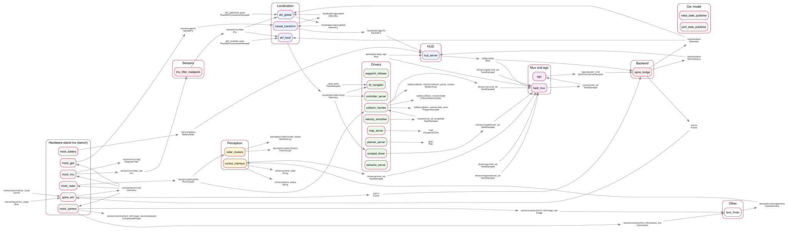

The real car's software, running on a laptop, with a stand-in for every piece of hardware. Use it to test anything between the drivers and the spine before the car, or the board, exists. It runs on a Mac or on Linux.
In one picture

Read it left to right: the stand-ins for the hardware, the sensors, perception,
localization, the drivers and the HUD, the mux and ego, then the backend. pixi run
graph-picture draws this from whatever is running.
Run it
pixi run build # once, and after every change
pixi run bench # the car's software, with stand-ins
pixi run bench-check # start it and test it: about 2 minutes
pixi run -e ml bench perception:=true # add YOLO and the stop signWhile it runs, in more terminals: pixi run graph (rqt_graph), pixi run rviz,
pixi run keyboard --local (you drive, at the keyboard priority), or pixi run check bench.
The bench stays on this computer, like the sim: these terminals see it, other computers
don't.
| Argument | Default | Does |
|---|---|---|
nav |
true |
Nav2: goals from RViz's 2D Goal Pose |
teleop |
false |
the joystick, if one is plugged in |
perception |
false |
YOLO and the stop-sign watcher. Needs pixi run -e ml |
lane |
false |
lane keeping on a pretend straight lane: the car drives itself on /drivers/ai/cmd_vel |
hud |
false |
the HUD's web server, on 127.0.0.1:5000 |
arm |
true |
arms the spine 12 s after start-up |
rviz, foxglove |
false |
RViz; foxglove_bridge on port 8765 |
obstacle |
false |
a 1 m box in the lane 15 m ahead, which only the pretend radar sees: Nav2 stops for it |
camera_obstacles |
false |
the detectors' boxes into Nav2's local costmap (Costmaps) |
What's real, and what's a stand-in
Every stand-in uses the real device's topic, message type and frame, so nothing above it can tell the difference.
| Part | On the bench | On the car |
|---|---|---|
| Drivers, twist_mux, ego | the car's own | the same |
| Localization | the car's own: both EKFs and navsat_transform, with GPS |
the same |
| The spine bridge | the car's own: spine_bridge and its CAN frames |
the same |
| The CAN bus | the topics /can/tx and /can/rx |
ros2_socketcan and can0 |
| The spine board and actuators | spine_sim: the firmware's own logic on a model car |
the spine board, two Jrk G2s, the throttle DAC |
| IMU | mock_imu |
aav_imu_yahboom |
| GPS | mock_gps |
ublox_gps (the default), gps_nmea or ublox_dgnss: gps_driver:= picks |
| Camera | mock_camera |
usb_cam |
| Radar | mock_radar |
ti_ros2_driver |
| Battery | mock_battery |
battery_monitor |
The stand-ins
| Stand-in | Package | Publishes | How it works |
|---|---|---|---|
spine_sim |
aav_spine_sim (Rust) |
/can/rx, /vehicle/bench/truth |
runs spine-core's Spine::step 100 times a second, as the board will, and drives a model car with the outputs |
mock_imu |
aav_bench |
/sensors/imu/data_raw, /sensors/imu/mag |
the model's turn rate and acceleration, plus noise and a small gyro drift |
mock_gps |
aav_bench |
/sensors/gps/fix |
where the antenna is, as latitude and longitude, with 0.5 m of noise, 5 times a second |
mock_camera |
aav_bench |
/sensors/camera/front_left/image_raw |
draws a road, and each stop sign at its real size when it's in view |
mock_battery |
aav_bench |
/vehicle/battery |
a 48 V pack draining over two hours (a guess until Q8) |
mock_radar |
aav_bench |
/sensors/radar/points |
sees the bench world's boxes as the TI radar would: a few noisy points, out to 8.4 m and 120 degrees wide; an empty cloud when nothing's there |
The bench world is aav_bench/config/bench.yaml. The model car starts at the map's origin
(the GPS datum), facing east. A stop sign stands 25 m ahead, 2 m to the right. With
obstacle:=true, a 1 m box stands in the lane 15 m ahead; a test can move it, or take it
away, with mock_radar's parameters.
Nav2 on the bench always has the radar in its local costmap, and collision_monitor
between it and the mux, as on a car with a radar.
The model car
| Part | The model | The number (a guess) |
|---|---|---|
| Steering motor | turns the wheels toward the target at a fixed rate | 0.8 rad/s, stops at ±0.5 rad |
| Throttle | full throttle accelerates | 2 m/s² |
| Brake | full brake decelerates, and never reverses the car | 4 m/s² |
| Drag | rolling resistance and air | 0.1 per second |
| Wheel encoder | counts per metre | 100 |
| Movement | the bicycle model, the same one ego uses | wheelbase from vehicle.yaml |
Measure the car (Q1-Q5), and these numbers can match it.
Poke it
In a terminal opened with pixi shell, then source install/setup.zsh
(setup.bash on Linux):
| To test | Do |
|---|---|
| A scripted drive | ros2 action send_goal /scripted_drive aav_interfaces/action/ScriptedDrive "{target_speed: 1.0, acceleration: 0.5, deceleration: 1.0, hold_time: 5.0}" |
| A Nav2 goal | RViz's 2D Goal Pose, or the command in Your first day |
| The e-stop | pixi run estop, then pixi run estop-clear |
| The hardware e-stop | ros2 topic pub -t 3 /vehicle/bench/hw_estop std_msgs/msg/Bool "{data: true}", then false |
| A driver failing | ros2 topic pub -t 3 /vehicle/bench/driver_faults std_msgs/msg/UInt16 "{data: 8}" (8 = steering, 16 = brake, 32 = throttle DAC, 64 = encoder) |
| Arming again | ros2 service call /spine/arm std_srvs/srv/SetBool "{data: true}" |
| The truth against the EKF | ros2 topic echo /vehicle/bench/truth and ros2 topic echo /localization/odom/global |
After an e-stop, a driver fault or a gap in commands, the spine latches. Arm it again, as on the car.
bench-check
pixi run bench-check starts the bench on a private ROS domain, on this computer only, so
nothing on the network sees it. Then it runs these checks. Results on Ben's Mac, 10 October:
| Check | What passes | Result |
|---|---|---|
| Start-up | the spine arms and stays armed; both EKFs run | works |
| Graph against the contract | every topic marked live on the bench has its publisher and type (check_graph.py --profile bench) |
works 0 failures |
| Scripted drive | 4.5-8 m for a 6.5 m plan: the speed loop trails the plan by about a second | works 4.9-6.2 m over the day's runs |
| Global EKF against the truth | under 1.5 m apart | works 0.06 m |
| Software e-stop | 1 m/s to a stop, and the spine reports it | works |
| Hardware e-stop | the same, from /vehicle/bench/hw_estop |
works |
Stop sign (pixi run -e ml bench-check --perception) |
Nav2 drives 40 m east: the car stops before the sign, waits, and reaches the goal | works locked 4.7 m before the sign, stopped, reached the goal |
Obstacle (pixi run bench-check --obstacle) |
a box as wide as the lane, 15 m ahead, Nav2 driving 30 m: collision_monitor's stop zone stops the car before it; with the box gone, the car reaches the goal. If a busy computer latches the spine, the check arms it again |
works on main, 11 Oct: stood still 0.44 m before the box, from 0.95 m/s; reached the goal once the box was gone |
Run it after changing anything between the drivers and the spine.
Lane keeping
The whole lane-keeping loop runs on the bench. mock_camera draws the road from where the
car really is, lane_finder finds the lines, and control_interface steers on
/drivers/ai/cmd_vel.
pixi run bench lane:=true nav:=false start_y:=0.3 # from 0.3 m left of the centre
pixi run bench-check --lane # the same, measured: 1 more minute| Argument | Default | Does |
|---|---|---|
lane |
false |
true: lane keeping from the camera (lane_finder, control_interface). fake: control_interface on a pretend lane, without the camera |
start_y |
0.0 |
m: start the car this far left of the road's centre (- = right) |
start_yaw |
0.0 |
rad: start it turned this far left of the road. The EKFs still think it faces east |
bend_radius |
straight | m: bend the road from 30 m on, + to the left, - to the right |
- The road (
bench.yaml): one lane 3.5 m wide, running east along y = 0, with 0.15 m lines and 0.5 m of tarmac outside them. - The picture follows the car: each pixel below the horizon is traced down to the ground and coloured by where it lands on the road. About 4 ms a picture.
- Nothing else drives:
nav:=falseleaves out Nav2, which outranks lane keeping.
What bench-check --lane checks
After the usual checks, it starts the bench again, with lane keeping, the car 0.3 m left of the centre.
| Check | What passes | Result, Ben's Mac, 11 October: 6 runs |
|---|---|---|
| Start-up, graph against the contract | as above, with lane keeping running | works |
| Lane keeping | back within 5 cm of the centre by 25 s of driving, and still there at 30 s; under 10 cm past the centre; both lines seen in 9 pictures of 10 | works 0.30 m to 0.00 m: within 5 cm after 5.6-6.7 s (about 5 m of road), 2 cm past the centre at most |
| The finder against the truth | (reported) | 0.8-1.2 cm out on average, both lines in every picture |
- A busy computer: a gap of 100 ms in the commands latches the spine, and the car stops. The check arms it again, as a safety driver would, and only counts the time the car moves. It says how many times that happened.
- A bend isn't in the check. By hand, with
bend_radius:=60(left, from 30 m on): the car cuts in up to 8 cm as the bend comes into view, then runs 4-5 cm inside the centre round it, both lines seen in every picture.
What the bench has found already
| Found | Fixed |
|---|---|
| Asked to stop, the spine's speed loop let the car coast under 0.2 m/s, so it crept on | the speed loop brakes to a standstill |
| The scripted driver stepped its plan by a fixed time; on a busy computer a 6.5 m drive went 22 m | it measures the time that really passed |
| The scripted driver used a whole CPU core while idle (an rclpy executor bug) | one thread and a timer |
| On a Mac, best-effort subscribers lost every camera image | the detector subscribes reliably |
The HUD listened to a topic called /true: included launch files share their arguments |
the argument is gps_topic now |
| The speed loop lags a ramp by about a second, and overshoots by 12%, with the model's numbers | needs you tune kp and ki on the car |
Replacing a stand-in with the real thing
Start the real part, and stop the stand-in: same topic, same type, same frame.
| Stand-in | The real part | Started by |
|---|---|---|
spine_sim |
the spine board, on CAN | aav_spine spine.launch.py (ros2_socketcan, Linux) |
mock_imu, mock_gps, mock_battery, mock_radar |
the drivers | aav_sensors sensors.launch.py |
mock_camera |
usb_cam |
aav_sensors cameras.launch.py |
Limits
- The model car is simple: no wheel slip, no slopes, and an instant brake. Its numbers are guesses.
- Everything runs in real time. A busy laptop can delay commands past the spine's 100 ms watchdog, which then latches the spine, as it should.
- On Ctrl-C, some nodes print a traceback, or a stack trace from deep in ROS's messaging, while they shut down. It's harmless.
- The pretend radar sees only the boxes, not the stop sign; the camera doesn't draw the boxes.
- Parked, the EKFs' heading drifts with
mock_imu's gyro bias, a few degrees a minute (10.5 degrees after about 2 minutes, 11 Oct), until the car drives and GPS corrects it.
Files
| File | What it is |
|---|---|
src/aav_bringup/launch/bench.launch.py |
the profile |
src/bench/aav_spine_sim |
spine_sim: crates/bench-car (the model and the loop, 16 tests, no ROS) and crates/spine-sim (the ROS node) |
src/bench/aav_bench |
the pretend sensors, their tests, and config/bench.yaml |
tools/bench_check.py |
pixi run bench-check |
tools/graph_picture.py |
pixi run graph-picture: the picture at the top |